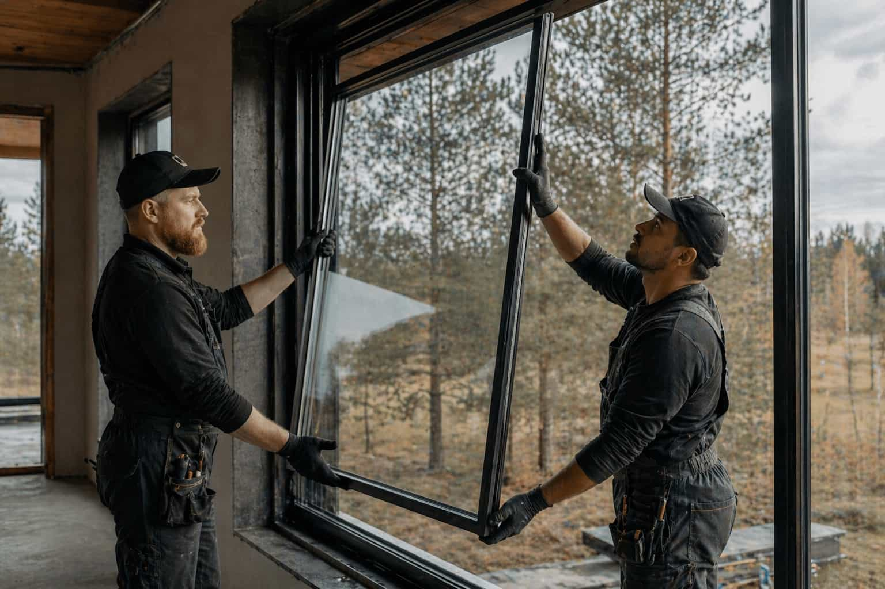

Define the window need
Choose installation, replacement, repair, custom design, efficiency, or consultation.

Explore installation, replacement, repair, custom design, energy-efficient windows, and consultation categories before speaking with independent local providers.
Paneo is an independent matching platform. We do not perform window work directly.
Paneo keeps the first step focused: define the project, add useful context, then compare independent provider options before making any commitment.
Choose installation, replacement, repair, custom design, efficiency, or consultation.
Share style, quantity, ZIP code, timing, budget direction, and property details.
Review provider options and verify license, insurance, quote terms, and warranty details.
Each category has its own page with provider-comparison context, project factors, and a simple quote request direction.
The right comparison is not only about price. Frame material, glass performance, project timing, warranty terms, service area, and property access can all affect the final provider fit.
A clearer starting point leads to more relevant outcomes. When key project factors are defined early, comparison becomes more focused — helping you engage only with providers that align with your expectations.
Does the provider handle your window type, home style, material preference, and project scope?
Can the provider serve your location, expected timeline, and installation or repair window?
Can you confirm license, insurance, written estimate, warranty terms, and final agreement details?
Instead of browsing every option, start with the reason behind your project. Paneo helps homeowners understand which service category may fit before comparing independent local providers.
You may need window replacement or repair depending on condition.
Start with installation or custom window design options.
Compare providers around insulation, glass type, and climate needs.
Begin with a consultation before choosing a provider path.
Share the basic project category and location. Paneo helps point your request toward independent window providers that may match.